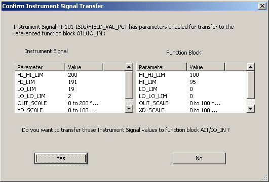

Transferring signal data to DeltaV function blocks
After you have configured your instrument data and saved it to the DeltaV database, you can bind (assign) DSTs to I/O function blocks. Binding may cause SPI instrument data to be transferred from the DST to the I/O function block if the SPI data is different and the SPI data was enabled for transfer to an I/O function block.
Transferring Conventional and HART Signal Data
For conventional and HART I/O, you bind DSTs and parameters to IO_IN and IO_OUT parameters of I/O function blocks from DeltaV Explorer or Control Studio. For example, from the IO_IN parameter Properties dialog of an AI block, select the DST TI-101-ISIG and FIELD_VAL_PCT.
After you close the IO_IN Properties dialog a confirmation dialog similar to the following appears.

If you are working in Control Studio you must save the control module before assigning I/O for the transfer dialog to appear. After confirming the signal transfer, refresh Control Studio (press F5), then save the module again.
Review the parameter values and if they are correct, click Yes to transfer those values to the function block. Any changes appear in DeltaV Explorer and Control Studio.
Transferring Fieldbus Signal Data
Binding a fieldbus device to the DeltaV configuration is similar to binding conventional and HART data. Instead of selecting an I/O signal in a DST, select a function block. Use the context menu to convert the block to a fieldbus block. Use the context menu again to select the Assign to Fieldbus option. On the dialog that appears, select a fieldbus device and a function block in it. The transfer dialog that appears is similar to the one shown above.
Before you transfer fieldbus signal data you must convert target function blocks to fieldbus in Control Studio and save the control module so that the function block definition matches the signal definition.
The transfer of fieldbus signal data to a Physical Block (created from the Special Items palette in Control Studio) is not supported.
Only if the signal data exists, is enabled, and you click Yes on the confirmation dialog is the fieldbus device function block assigned to the function block and signal parameter data transferred. In all other cases the only result is that the fieldbus device function block is assigned to the function block.
Transferring Data from User-defined Bulk Edit or by Importing an fhx File
There are two other ways in which data can be transferred to function blocks:
From a properly configured Bulk Edit worksheet in which I/O assignments are made.
By importing an fhx file that contains SPI instrument data and in which SPI data transfer is enabled.
In both of these cases data is transferred to function blocks, but a confirmation dialog does not appear. However, messages appear in the standard \DVData\ImportExportProgress.log file reporting the signals transferred for each function block. For example:
Information: Transferred enabled Instrument Signal parameters OUT_SCALE, XD_SCALE, L_VALUE from CTRL1C01CH01/FIELD_VAL_PCT to function block on path MODULE1/AI1 parameters OUT_SCALE, XD_SCALE, L_VALUE respectively.
If you need to retain this information for future use, you must save the log file with another name.